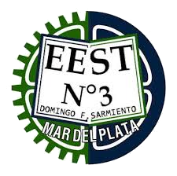
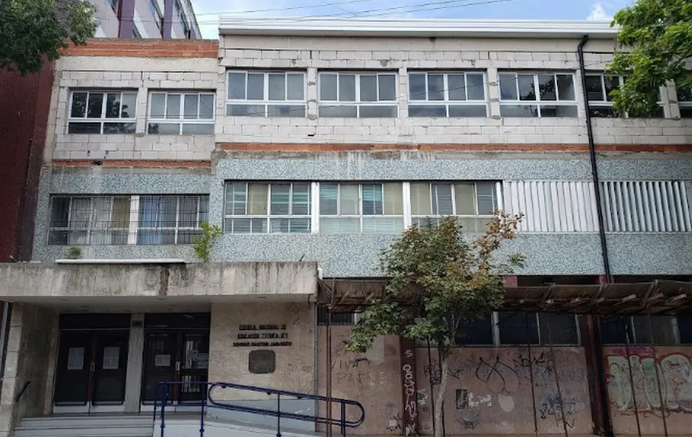

La finalidad de la formación del técnico secundario es la adquisición de capacidades profesionales de calidad, con una sólida formación general y una formación técnica específica que trascienda el ámbito educativo y se vincule con el sistema socio productivo local.
La formación del técnico secundario de todas las especialidades requiere prepararse para anticipar las demandas del mundo del trabajo y vincularse con los sectores de punta de la ciencia y la tecnología, para alcanzar el objetivo fundamental: la inserción de los egresados en el futuro productivo del país.
La especialidad de Informática prepara a los estudiantes para desarrollarse en el área de las tecnologías de la información y la comunicación.
Durante la formación se trabajan contenidos relacionados con programación, desarrollo de software, bases de datos, redes, hardware y diferentes tecnologías informáticas.
El objetivo es que los estudiantes desarrollen capacidades para resolver problemas utilizando herramientas tecnológicas y puedan continuar sus estudios o incorporarse al mundo laboral.
La especialidad de Química forma a los estudiantes en el estudio de la materia, sus propiedades, transformaciones y aplicaciones en diferentes industrias.
Durante la formación se abordan temas como química orgánica, inorgánica, análisis químico, laboratorio y procesos industriales relacionados con la química.
El objetivo es que los estudiantes adquieran conocimientos y habilidades para desempeñarse en laboratorios, industrias químicas o continuar sus estudios en el área científica.
La especialidad de Automotores capacita a los estudiantes en el mantenimiento, reparación y diagnóstico de vehículos automotores.
Durante la formación se estudian sistemas mecánicos, eléctricos y electrónicos de los vehículos, así como técnicas de reparación y mantenimiento.
El objetivo es que los estudiantes adquieran habilidades para trabajar en talleres, concesionarias o continuar sus estudios en el área automotriz.
La especialidad de Electromecánica combina conocimientos de mecánica y electricidad para formar a los estudiantes en el diseño, mantenimiento y reparación de sistemas electromecánicos.
Durante la formación se estudian motores eléctricos, sistemas de control, automatización y mantenimiento de equipos electromecánicos.
El objetivo es que los estudiantes adquieran habilidades para trabajar en industrias, empresas de servicios o continuar sus estudios en el área tecnológica.
La especialidad de Construcciones prepara a los estudiantes en el diseño, planificación y ejecución de proyectos de construcción.
Durante la formación se estudian técnicas de construcción, materiales, estructuras, seguridad y gestión de obras.
El objetivo es que los estudiantes adquieran conocimientos y habilidades para trabajar en empresas constructoras, estudios de arquitectura o continuar sus estudios en el área de la construcción.
La especialidad de Electrónica capacita a los estudiantes en el diseño, desarrollo y mantenimiento de sistemas electrónicos.
Durante la formación se estudian circuitos electrónicos, microcontroladores, programación, telecomunicaciones y sistemas de control.
El objetivo es que los estudiantes adquieran habilidades para trabajar en empresas de electrónica, telecomunicaciones o continuar sus estudios en el área tecnológica.
Teléfono: 542234950285
Dirección: 14 de Julio CRB Mar del Plata Buenos Aires AR, San Juan 2550
Localidad: Mar del Plata
Provincia: Provincia de Buenos Aires